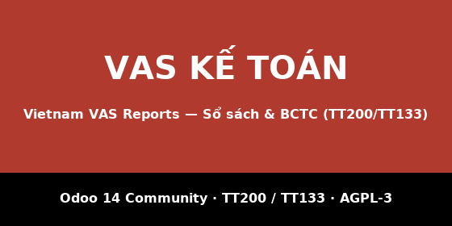

vn_core) với hàng trăm unit test chạy không cần Odoo.Module này là phần kế toán. Cài thêm tuỳ nhu cầu:
l10n_vn_stock_reports — Thẻ kho (S12-DN), Sổ chi tiết
vật liệu (S10-DN), Bảng tổng hợp N-X-T (S11-DN)l10n_vn_mrp_reports — Chi phí sản xuất và giá thành,
Thẻ tính giá thành (S37-DN)l10n_vn_asset_reports — Sổ TSCĐ (S21-DN), Thẻ TSCĐ
(S23-DN), Bảng phân bổ khấu hao (06-TSCĐ)Có dữ liệu demo đầy đủ (hai năm tài chính, hoá đơn có thuế GTGT) để xem báo cáo ngay sau khi cài. Giấy phép AGPL-3, mã nguồn mở.